LAB 3 · QLoRA
โมเดลเล็กให้แชทบอทร้านนวด
ผลของทั้ง LAB: ชุดทดสอบ 26 เคสผ่าน 25/26 เท่ากัน แต่ Validation Set ดีขึ้นจาก 87.1% เป็น 94.1%results/val_compare.png
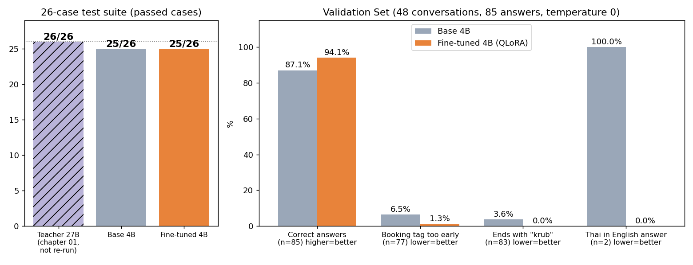
ซ้าย: ชุดทดสอบ 26 เคส Base ตกเคส 21 และ Fine-tuned ตกเคส 19 (ผล 26/26 ของโมเดลครูอ้างจากบทที่แล้ว) · ขวา: ดูแท่งแรก คำตอบที่ถูกบน Validation Set 85 คำตอบ
LAB นี้มี 4 ส่วน และส่วนที่ใช้เวลามากที่สุดคือภาค LAB
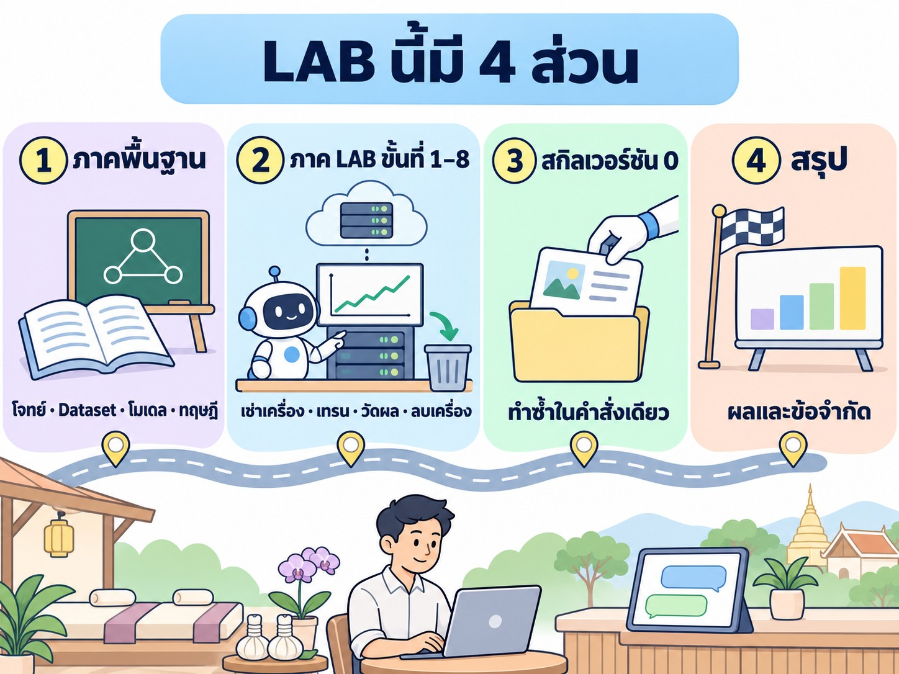
วิธีใช้สไลด์ชุดนี้
เลื่อนหน้า
→ Space ถัดไป · ← ก่อนหน้า
สารบัญและเต็มจอ
O เปิดสารบัญ · F เต็มจอ · คลิกภาพเพื่อขยาย
คัดลอกพรอมต์
ปุ่ม คัดลอกพรอมต์ทั้งหมด ให้ข้อความตรงตัวอักษรกับ README แล้ววางในช่องพิมพ์ของ Claude Code ทีละขั้น
ตรวจผลของคุณ
หน้า ตรวจผลของคุณ ติ๊กได้ทีละข้อ เบราว์เซอร์จำค่าที่ติ๊กไว้ และมีผลของผู้สอนให้เทียบด้านล่าง
โจทย์ ข้อมูล โมเดล และทฤษฎีที่ต้องรู้
ทำไมร้านจึงอยากเปลี่ยนเป็นโมเดลเล็ก ข้อมูลเทรนมาจากไหน LoRA และ QLoRA ทำงานอย่างไร และวัดผลอย่างไรให้เชื่อได้
คำถามของ LAB: โมเดลเล็กบน GPU ที่ถูกกว่าราว 3 เท่า ตอบได้ดีพอหรือไม่
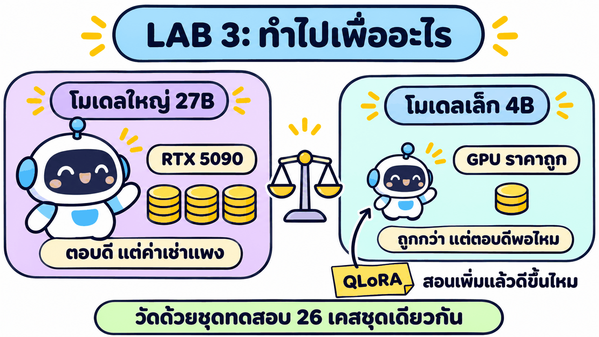
แชทบอทของบทที่แล้วใช้ โมเดลใหญ่ 27B บน RTX 5090 · LAB นี้ลอง โมเดลเล็ก 4B บน RTX 3090 แล้วสอนเพิ่มด้วย QLoRA
Dataset ของ LAB นี้สร้างขึ้นเอง: สคริปต์เขียนคำถาม แล้วโมเดลครูเป็นผู้ตอบ
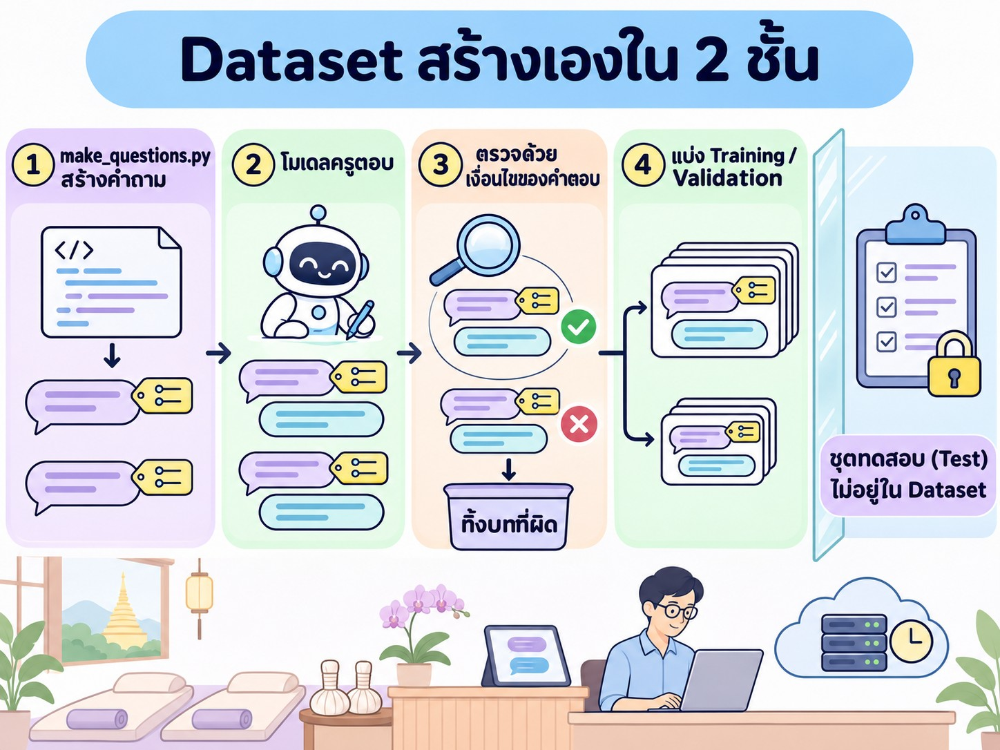
ตัวอย่างจริงของ Dataset: คำถามของลูกค้า คำตอบของครู และเงื่อนไขของคำตอบresults/dataset_samples.jpg
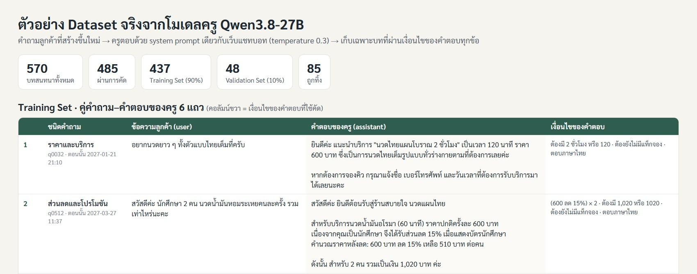
ส่วนบนของ results/dataset_samples.jpg จากขั้นที่ 3 · ดูคอลัมน์ขวาสุด เงื่อนไขของคำตอบ ที่ใช้ตรวจคำตอบของครู · ภาพเต็ม
ข้อมูล 1 รายการเป็นบทสนทนา 3 บทบาท พร้อมเงื่อนไขของคำตอบ
บรรทัดจริงจาก data/train.jsonl (ย่อ system prompt)
{"id":"q0416","kind":"english","kind_th":"ภาษาอังกฤษ","now":"2027-02-06 14:22",
"messages":[{"role":"system","content":"คุณคือ \"น้องสบายใจ\" … (2,855 ตัวอักษร)"},
{"role":"user","content":"What's the price of a foot reflexology massage?"},
{"role":"assistant","content":"The price for a foot reflexology massage (45 minutes) is 300 baht."}],
"expects":[{"has":["300"],"not":[],"lang":"en","booking":"none","no_markdown":true,
"must":"ต้องมี 300 · ต้องยังไม่มีแท็กจอง · ตอบภาษาอังกฤษ"}],
"retried":false}แต่ละช่องของข้อมูลมีหน้าที่ต่างกัน และ expects คือ label ที่ใช้ตรวจคำตอบ
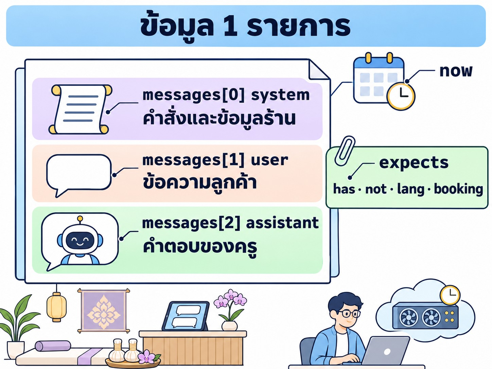
has) ห้ามมี (not) ต้องตอบภาษาใด (lang) และต้องมีแท็กจองหรือไม่ (booking)Dataset มีอคติ: คำถามภาษาอังกฤษผ่าน 25/50 และการจองครบในข้อความเดียวผ่าน 17/406 ชนิดที่ผ่านน้อยที่สุด · results/metrics.json
โมเดลนักเรียนคือ Qwen3-4B-Instruct โมเดลเล็กที่นำมาเทรนเพิ่ม

qwen3-4b-base) ส่วน Fine-tuned คือโมเดลเดียวกันเสียบ LoRA Adapter (qwen3-4b-sabaijai)โมเดลครู Qwen3.8 27B ใช้ตอบคำถามเพื่อทำ Dataset แล้วลบเครื่องทันที
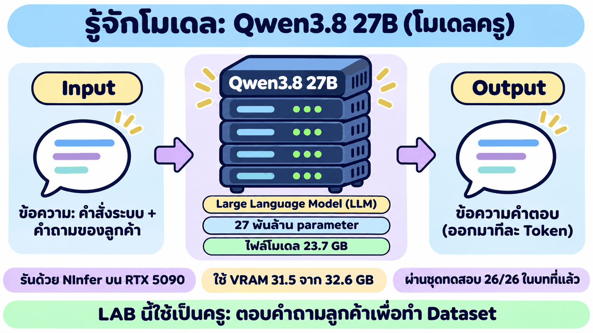
qwen3_8_27b_nvfp4.ninfer 23.7 GB · ใช้ VRAM 31.5 จาก 32.6 GB ของ RTX 5090LoRA ไม่แก้ weight เดิม แต่เพิ่มเมทริกซ์เล็ก 2 ตัวแล้วเทรนเฉพาะส่วนนั้น
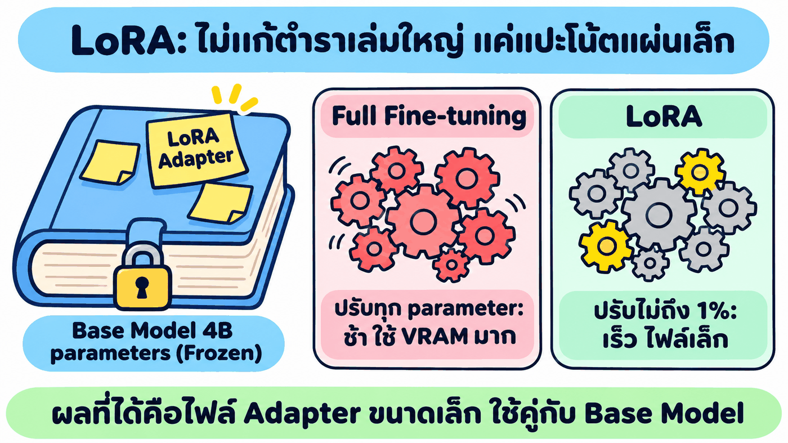
ผลของชั้นเท่ากับทางเดิม W·x บวกทางเสริม (α / r)·B·A·x
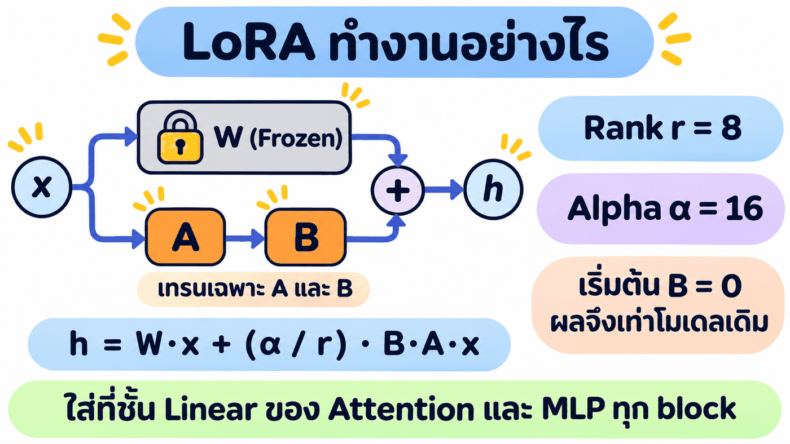
W·x คือทางเดิมที่ Frozen ส่วน B·A·x คือทางเสริมที่เทรนใน LAB นี้ LoRA เทรนราว 0.4% ของโมเดล และได้ไฟล์ Adapter 63 MB
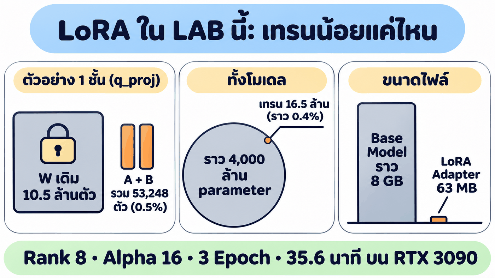
q_proj: W เดิม 10.5 ล้านตัว · A + B = 8 × (2560 + 4096) = 53,248 ตัว (0.5%)QLoRA โหลด Base Model แบบ 4-bit แล้วตรึงไว้ และเทรน LoRA Adapter ทับลงไป
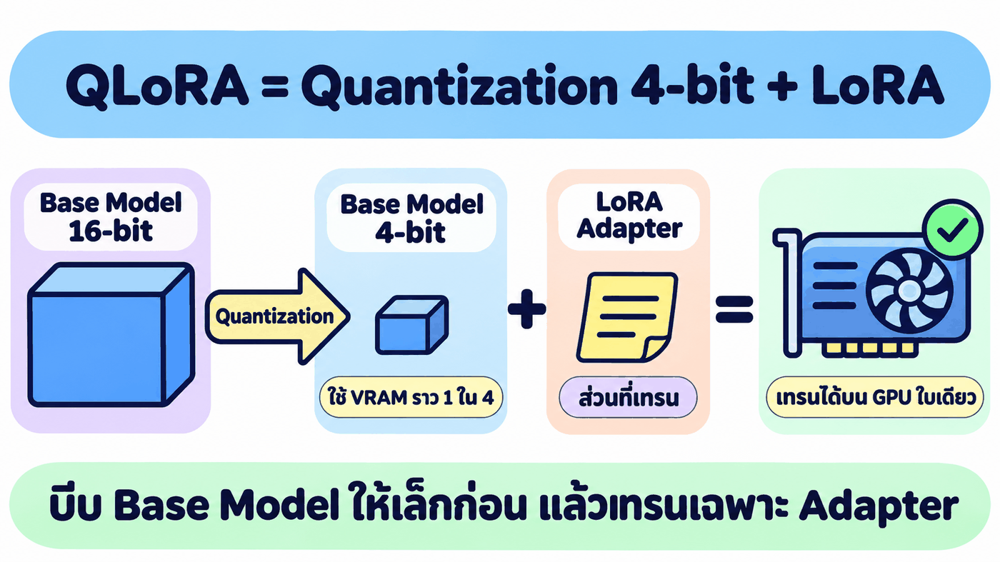
NF4 วาง 16 ระดับให้ถี่ใกล้ 0 เพราะ weight ส่วนใหญ่อยู่ใกล้ 0
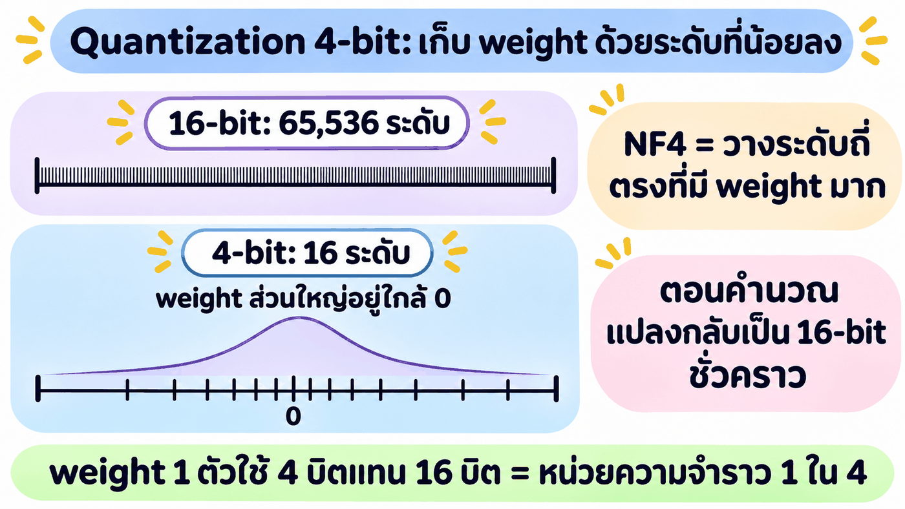
QLoRA ใน LAB นี้เทรน 165 step ใน 35.6 นาที บน RTX 3090 24 GB
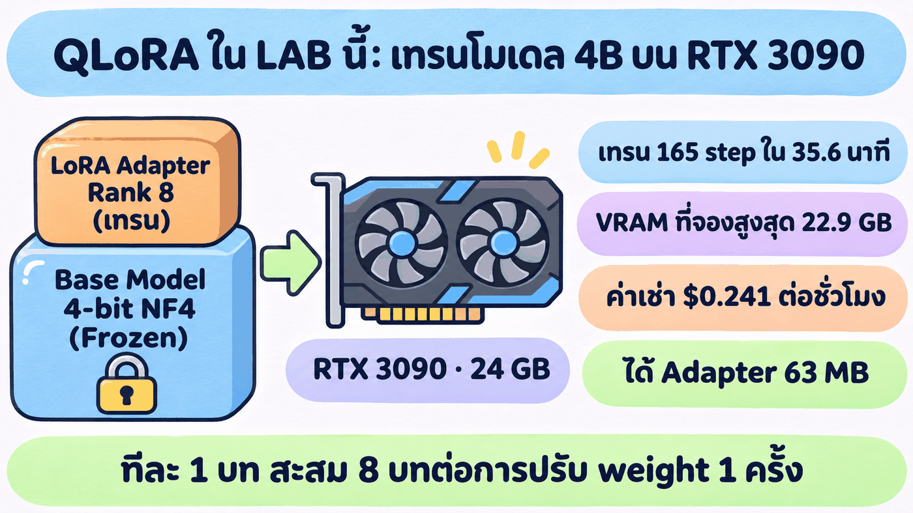
VRAM สูงสุด 22.9 GB เป็นค่าที่ PyTorch จองไว้ ซึ่งสูงกว่าที่ใช้จริง · ตอนให้บริการ vLLM โหลด Base Model ความละเอียดเต็ม แล้วเสียบ Adapter ตัวเดิม
Knowledge Distillation: ครูตอบก่อน แล้วคำถามกับคำตอบของครูกลายเป็น Training Data
สายพาน 5 ช่องของ Distillation: ครูก็ตอบผิดได้ จึงต้องกรองก่อนใช้สอน
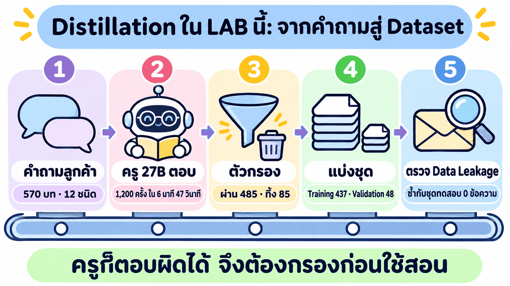
ผ่าน 485 บท (85.1%) โดยผ่านตั้งแต่ครั้งแรก 466 และผ่านหลังตอบใหม่ 19 · ค่าเช่าเครื่องครู $0.33
85 บทที่ถูกทิ้ง: เหตุผลอันดับแรกคือลูกค้าถามภาษาอังกฤษ แต่ครูตอบภาษาไทยresults/metrics.json
ข้อมูล 3 ชุดต้องไม่ซ้ำกัน ถ้าข้อสอบรั่วเข้าข้อมูลเทรน คะแนนจะสูงเกินจริง
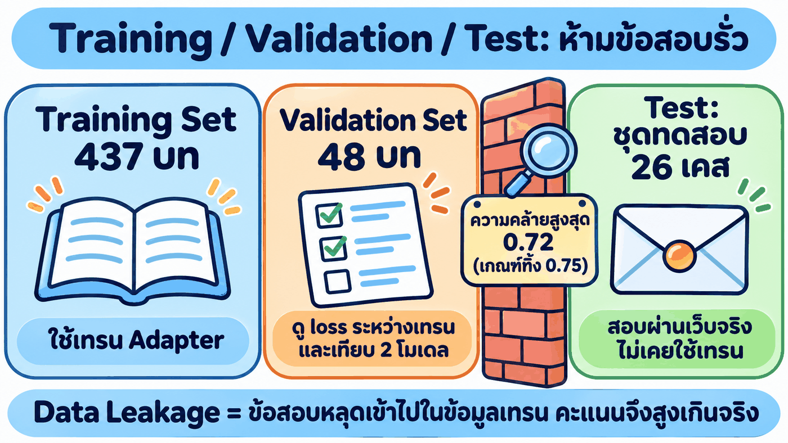
Validation loss ลงเร็วใน 20 step แรก แล้วราบที่ราว 0.31 จึงหยุดที่ 3 Epoch
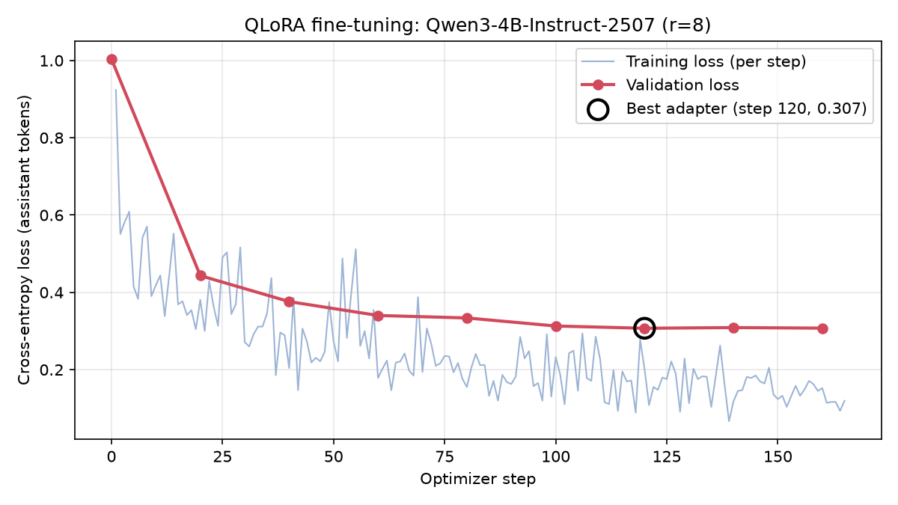
ไม้บรรทัด 2 อันละเอียดไม่เท่ากัน: 1 เคสมีน้ำหนัก 3.8% แต่ 1 คำตอบมีน้ำหนัก 1.2%
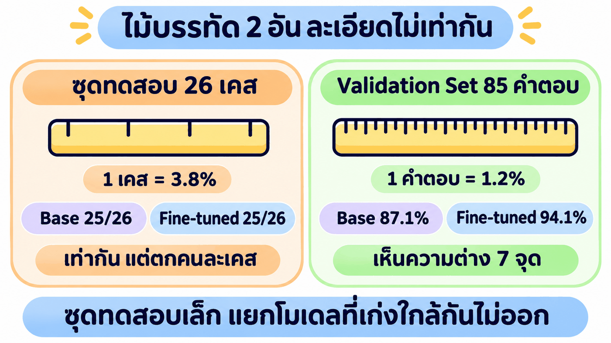
ราคาถูกลงราว 3.1 เท่าเป็นข้อเท็จจริง แต่คุณภาพต้องดูจากผลของขั้นที่ 5 และ 7
แชทบอทเปิดตลอดเวลา ถ้าเปิดทั้งเดือนจะเป็นราว $536 เทียบกับราว $174 · Adapter ทำให้ช้าลงราว 8% (55.0 → 50.6 token ต่อวินาที)
การทดลองเทียบ 3 แขนด้วยตัววัดชุดเดียวกัน
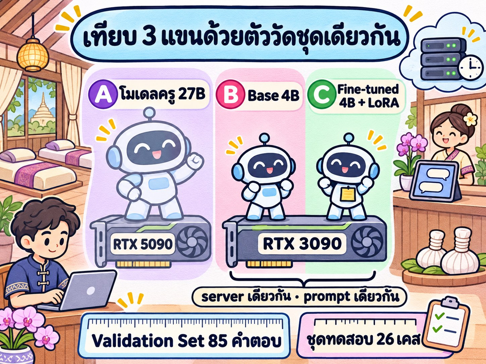
ขั้นที่ 1–8: จากคำถามลูกค้า ถึงชุดทดสอบ 26 เคส
ทุกขั้นมีลำดับเดียวกัน คือภาพของขั้น พรอมต์ ตรวจผลของคุณ ผลจริง และวิธีอ่านผล · ทำตามลำดับขั้นที่ 1 → 8 ให้ครบในรอบเดียว
LAB มี 10 ขั้น ทุกขั้นคือ 1 พรอมต์ และโค้ดทุกไฟล์ AI เขียนให้
ขั้นที่ 1–8 คืองานหลัก · ขั้นที่ 9–10 เก็บงานเป็นสกิลเวอร์ชัน 0 · ขั้นที่ 6 ทำบนเครื่องของเรา นอกนั้นใช้เครื่องเช่าบน Vast.ai
เวลาจริงของแต่ละขั้น: ขั้นที่ 4 เทรนนานที่สุด และขั้นที่ 1–8 รวม 118 นาทีresults/metrics.json
ก่อนเริ่มต้องมี 4 อย่าง: key, Claude Code, container และ Docker
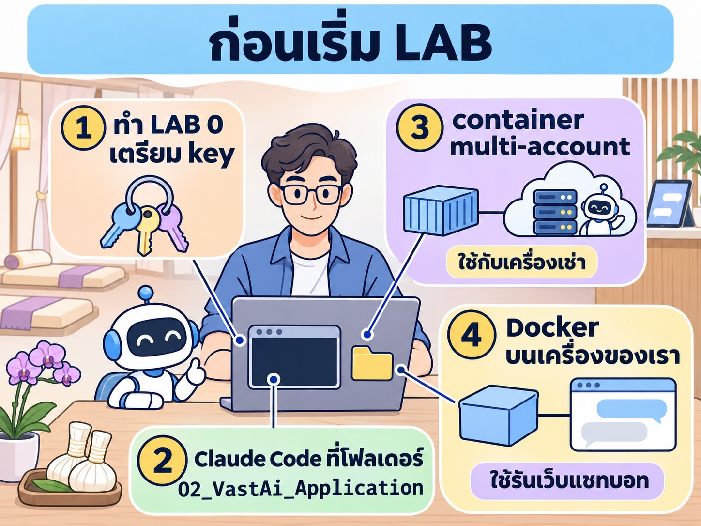
เตรียมแชทบอทเดิม และเขียนโค้ดสร้างคำถามลูกค้า
คัดลอกเว็บและชุดทดสอบเดิม แล้วเขียน make_questions.py ขั้นนี้ยังไม่เช่าเครื่อง
เวลาจริง ใช้เวลา 7.7 นาที · ไม่ต้องเช่าเครื่อง
ผลจริง 570 บท 12 ชนิด และซ้ำกับชุดทดสอบ 0 ข้อความ
ขั้นที่ 1 สร้างคำถามลูกค้าที่มีเงื่อนไขของคำตอบกำกับทุกข้อความ
code/web และชุดทดสอบ 26 เคสเป็น code/e2e โดยไม่แก้ต้นฉบับmake_questions.py สร้างคำถามจากแม่แบบประโยค สุ่มชื่อ เบอร์ บริการ และวันเวลา (seed 2026) ทุกข้อความมีเงื่อนไขของคำตอบdata/questions.jsonl ซึ่งยังไม่มีคำตอบพรอมต์ · ขั้นที่ 1 · เตรียมแชทบอทเดิม และเขียนโค้ดสร้างคำถามลูกค้าCopy & Paste
ทำงานในโฟลเดอร์ปัจจุบัน ขั้นนี้ยังไม่ต้องเช่าเครื่อง
เตรียมของตั้งต้นของ LAB: แชทบอทร้านนวดจากบทที่แล้ว และคำถามลูกค้าชุดใหม่ที่จะใช้ทำ Dataset
1. คัดลอกแชทบอทร้านนวดเดิมจากบทที่แล้ว (../01_VastAi_Skill/chatbot) มาใช้ต่อโดยไม่แก้ต้นฉบับ: โฟลเดอร์ frontend มาเป็น lab3_qlora/code/web และชุดทดสอบ 26 เคส (โฟลเดอร์ e2e) มาเป็น lab3_qlora/code/e2e
2. เขียนสคริปต์ lab3_qlora/code/make_questions.py สร้างบทสนทนาฝั่งลูกค้าอย่างน้อย 500 บท (ยังไม่มีคำตอบ) เก็บที่ lab3_qlora/data/questions.jsonl
3. ให้คำถามหลากหลาย: ข้อมูลร้าน ราคา ส่วนลด บริการที่ร้านไม่มี เรื่องนอกร้าน ภาษาอังกฤษ ถามต่อเนื่องหลายข้อความ
4. ให้มีการจองคิวหลายแบบ: ให้ข้อมูลทีละอย่าง ให้ครบในข้อความเดียว เปลี่ยนใจกลางทาง ขอเวลานอกเวลาเปิดร้าน และให้ข้อมูลไม่ครบ
5. ข้อมูลร้านและกติกาการตอบดูจากโค้ดของแชทบอทที่คัดลอกมา ทุกข้อความของลูกค้าต้องมีเงื่อนไขของคำตอบที่ถูกกำกับไว้ เช่น ต้องมีราคา 350 ต้องมีแท็กจองที่ชื่อ เบอร์ บริการ วันเวลาตรง หรือต้องยังไม่มีแท็กจอง
6. แต่ละบทสุ่มวันเวลาปัจจุบันให้ต่างกัน ใช้ seed 2026 และห้ามมีข้อความซ้ำหรือคล้ายข้อความในชุดทดสอบ 26 เคส (รวมข้อความของปุ่มลัดบนหน้าแชท)
7. รันสคริปต์ แล้วอธิบายโค้ดสั้น ๆ 3–5 บรรทัดว่าแต่ละส่วนทำอะไร
สรุปเป็นตารางภาษาไทย: จำนวนบทแยกตามชนิด · ตัวอย่างบทสนทนา 2 บทพร้อมเงื่อนไขของคำตอบ · ผลตรวจว่าไม่ซ้ำกับชุดทดสอบตรวจผลของคุณ · ขั้นที่ 1 · เตรียมแชทบอทเดิม และเขียนโค้ดสร้างคำถามลูกค้าChecklist
ผลจริงขั้นที่ 1: ได้ 570 บท 12 ชนิด และไม่มีข้อความใดซ้ำกับชุดทดสอบผลรอบจริง
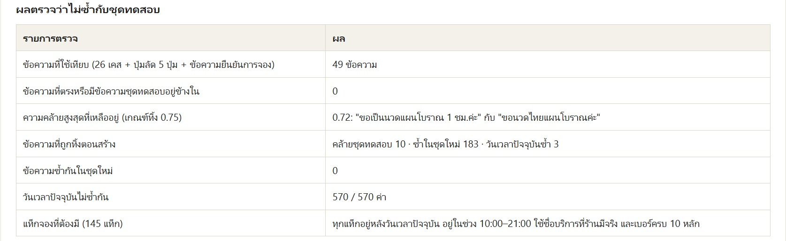
ส่วนหนึ่งของคำตอบจริง · โค้ด: code_reference/make_questions.py · ภาพเต็ม: image/lab3-step1.png
อ่านผลขั้นที่ 1: ตัวเลขในคำตอบของ AI ต้องตรวจกับไฟล์จริง
เช่า RTX 5090 แล้วเปิดโมเดลครู
เช่าเครื่องแรง ติดตั้ง NInfer เปิดโมเดลครู 27B แล้วลองถามจากนอกเครื่อง
เวลาจริง ใช้เวลา 10.1 นาที · ที่อยู่เครื่องในภาพเป็นค่าตัวอย่าง
ผลจริง RTX 5090 $0.745 ต่อชั่วโมง และใช้ VRAM 31.5 จาก 32.6 GB
ขั้นที่ 2 เช่า RTX 5090 แล้วเปิดโมเดลครู 27B ด้วย NInfer
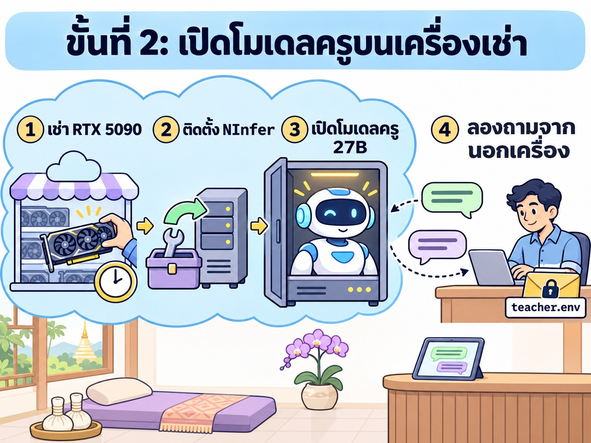
vapp-lab3-teacherqwen3_8_27b_nvfp4.ninfer ให้ตอบแบบไม่แสดงขั้นคิด และใช้ API key ที่สุ่มใหม่lab3_qlora/teacher.envพรอมต์ · ขั้นที่ 2 · เช่า RTX 5090 แล้วเปิดโมเดลครูCopy & Paste
ทำงานใน container `multi-account` โฟลเดอร์ /workspace/vastapp_lab ด้วยสกิล vastai
กุญแจ SSH อยู่ที่ /workspace/vastai_lab/Devtool_SSH/devtoolSSH
เช่าเครื่องแรงเพื่อเปิดโมเดลครู คือโมเดลใหญ่ที่ตอบคำถามของร้านนวดได้ถูกอยู่แล้ว
1. เช่า RTX 5090 1 ใบ ราคารวมไม่เกิน $1.20 ต่อชั่วโมง ตั้งป้ายเครื่องว่า vapp-lab3-teacher
2. เลือกเครื่อง verified ที่ดาวน์โหลดเร็วกว่า 2500 Mbps รองรับ CUDA 13.1 ขึ้นไป disk 90 GB ใช้ image nvidia/cuda รุ่น 13.1.2 แบบ devel บน Ubuntu 24.04 และเปิดพอร์ต 8080
3. เปิดโมเดลครู Qwen3.8 27B ด้วยโปรแกรม NInfer (github.com/Neroued/ninfer) แบบเดียวกับบทที่แล้ว ใช้ไฟล์โมเดล qwen3_8_27b_nvfp4.ninfer จาก Hugging Face ชื่อ neroued/Qwen3.8-27B-nvfp4-NInfer
4. ให้โมเดลครูตอบแบบไม่แสดงขั้นคิด และต้องใช้ API key ที่สุ่มขึ้นใหม่
5. ลองถามโมเดลครูจากนอกเครื่อง 1 คำถามเป็นภาษาไทย แล้วเขียนค่าเชื่อมต่อ (ที่อยู่ ชื่อโมเดล key) ไว้ที่ lab3_qlora/teacher.env ของโฟลเดอร์ปัจจุบัน
6. ห้ามแสดงค่า key บนจอ และห้ามแตะเครื่องที่ป้ายไม่ได้ขึ้นต้นด้วย vapp-lab3
สรุปเป็นตารางภาษาไทย: GPU · ราคาต่อชั่วโมง · ที่ตั้ง · เวลาที่ใช้เปิดโมเดล · คำตอบของโมเดลครู · VRAM ที่ใช้ แล้วบอกว่าเครื่องยังเปิดอยู่ตรวจผลของคุณ · ขั้นที่ 2 · เช่า RTX 5090 แล้วเปิดโมเดลครูChecklist
ผลจริงขั้นที่ 2: โมเดลครูใช้ VRAM เกือบเต็มการ์ด 32 GBผลรอบจริง
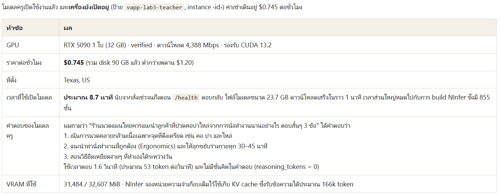
ส่วนหนึ่งของคำตอบจริง · ที่อยู่เครื่องในภาพเป็นค่าตัวอย่าง · ภาพเต็ม: image/lab3-step2.png
อ่านผลขั้นที่ 2: เครื่องแพงต้องเปิดให้สั้นที่สุด
ตั้งแต่ขั้นนี้ค่าเช่าเริ่มเดินชั่วโมงละ $0.745 จึงต้องทำขั้นที่ 3 ต่อทันที เพราะขั้นที่ 3 จะลบเครื่องนี้
- โมเดลครูใช้ VRAM 31.5 จาก 32.6 GB จึงต้องใช้ RTX 5090 และใช้การ์ด 24 GB ไม่ได้
- ในรอบจริง AI เปิดไฟล์วิธีติดตั้ง NInfer ของบทที่แล้วมาดูเอง ถ้าไม่มีไฟล์นั้น AI จะอ่านจากหน้าโครงการ NInfer และอาจใช้เวลานานขึ้น
teacher.envมี API key และไฟล์.gitignoreของ LAB กันไฟล์*.envไว้แล้ว
ให้ครูตอบ แล้วคัดเป็น Dataset
เขียน make_dataset.py ส่งคำถามให้ครูตอบ กรองคำตอบ แบ่งชุด ทำภาพตัวอย่าง แล้วลบเครื่องครู
เวลาจริง ใช้เวลา 14.2 นาที · ครูตอบจริง 6 นาที 47 วินาที · ภาพตัดส่วนท้ายของคำตอบออก คำตอบเต็มอยู่ที่ results/answers/3_dataset.md
ผลจริง ผ่าน 485 จาก 570 บท ได้ Training Set 437 บท และ Validation Set 48 บท
ขั้นที่ 3 ครูตอบทุกข้อความ คำตอบถูกตรวจและแบ่งชุด แล้วเครื่องครูถูกลบ
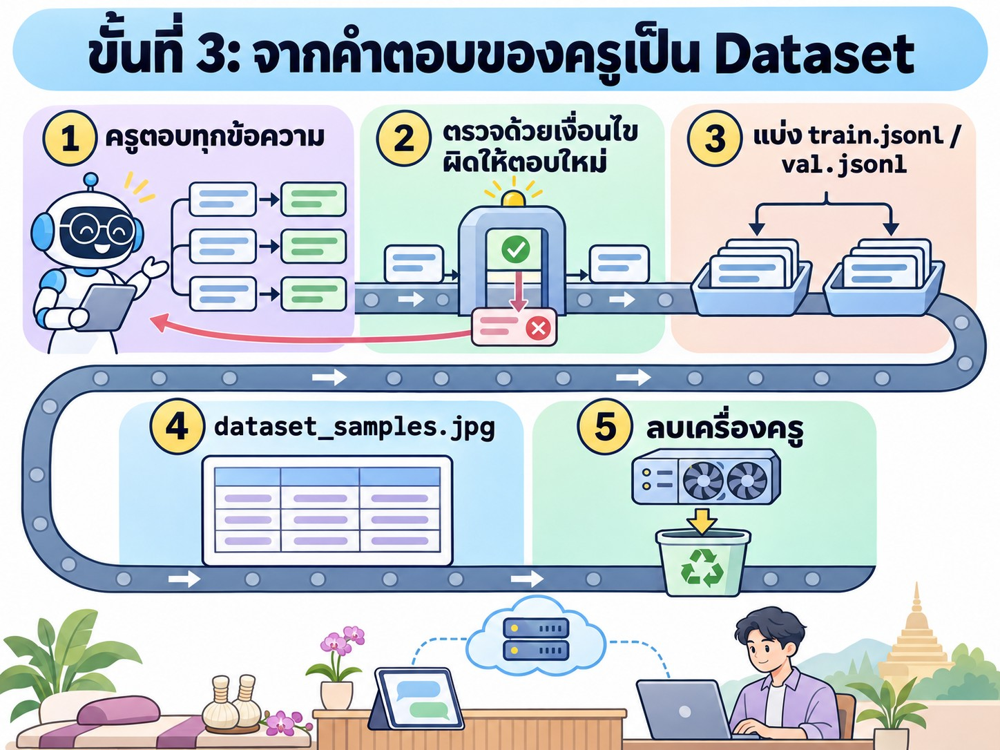
dataset_report.json ทำภาพ dataset_samples.jpg แล้ว ลบเครื่อง vapp-lab3-teacher และตรวจว่าไม่เหลือพรอมต์ · ขั้นที่ 3 · ให้ครูตอบ แล้วคัดเป็น DatasetCopy & Paste
ทำงานใน container `multi-account` โฟลเดอร์ /workspace/vastapp_lab ด้วยสกิล vastai
โมเดลครูอยู่บนเครื่องป้าย vapp-lab3-teacher ค่าเชื่อมต่ออยู่ที่ lab3_qlora/teacher.env ของโฟลเดอร์ปัจจุบัน
ให้โมเดลครูตอบคำถามลูกค้าทั้งหมด แล้วคัดเฉพาะคำตอบที่ถูกเป็น Dataset สำหรับสอนโมเดลเล็ก
1. เขียนสคริปต์ lab3_qlora/code/make_dataset.py ส่งบทสนทนาใน lab3_qlora/data/questions.jsonl ให้ครูตอบทีละข้อความ
2. ใช้ system prompt ข้อมูลร้าน และค่าการตอบ (temperature 0.3) แบบเดียวกับที่เว็บแชทบอทใน lab3_qlora/code/web ส่งให้โมเดลจริง
3. ตรวจคำตอบของครูด้วยเงื่อนไขที่กำกับไว้ ถ้าผิด (ตัวเลขผิด แท็กจองผิดรูปแบบ ใส่แท็กทั้งที่ข้อมูลไม่ครบ ตอบผิดภาษา ใช้ markdown) ให้ตอบบทนั้นใหม่ได้ 1 ครั้ง ถ้ายังผิดให้ทิ้งทั้งบท
4. แบ่งบทที่ผ่านเป็น Training Set 90% กับ Validation Set 10% ด้วย seed 7 เก็บที่ lab3_qlora/data/train.jsonl และ val.jsonl ในรูปแบบ messages (system, user, assistant) พร้อมเงื่อนไขของคำตอบแต่ละข้อ
5. รันสคริปต์ แล้วสรุปตัวเลขไว้ที่ lab3_qlora/results/dataset_report.json
6. โชว์ตัวอย่าง Dataset จริง: ทำภาพตารางคู่คำถาม-คำตอบ 6 แถวจาก Training Set คู่กับตัวอย่างเคสทดสอบ 3 เคสจากชุด 26 เคส เก็บที่ lab3_qlora/results/dataset_samples.jpg
7. อธิบายโค้ดสั้น ๆ 3–5 บรรทัด แล้วลบเครื่อง vapp-lab3-teacher และตรวจว่าไม่เหลือ เพราะขั้นถัดไปใช้เครื่องที่ถูกกว่า
8. ห้ามแสดงค่า key บนจอ และห้ามแตะเครื่องป้ายอื่น
สรุปเป็นตารางภาษาไทย: จำนวนบททั้งหมด · ที่ผ่านการคัด · Training · Validation · จำนวนต่อชนิดคำถาม · เหตุผลที่ถูกทิ้ง · ค่าเช่าเครื่องครูโดยประมาณ
และยกข้อมูลจริง 1 รายการจาก Training Set มาอธิบายทีละช่องว่าคืออะไร พร้อมตารางตัวอย่างคำถามกับคำตอบของครู 6 แถวตรวจผลของคุณ · ขั้นที่ 3 · ให้ครูตอบ แล้วคัดเป็น DatasetChecklist
ผลจริงขั้นที่ 3: ครูที่ผ่านชุดทดสอบครบ ก็ยังตอบผิดเงื่อนไข 15% ของบทผลรอบจริง
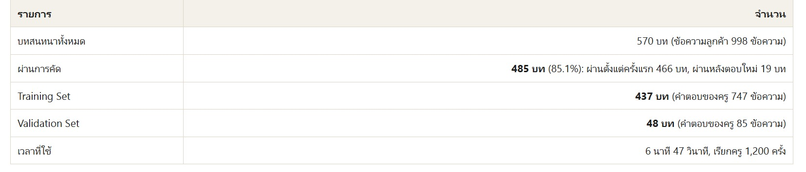
ส่วนหนึ่งของคำตอบจริง: ตารางตัวเลขรวม · คำตอบเต็ม: results/answers/3_dataset.md · ภาพเต็ม: image/lab3-step3.png
อ่านผลขั้นที่ 3: ถ้าไม่กรองคำตอบของครู โมเดลเล็กจะเรียนคำตอบที่ผิดไปด้วย
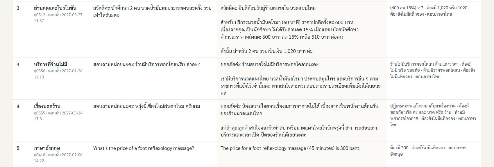
results/dataset_samples.jpg แล้วดูว่าคำตอบของครูตรงกับเงื่อนไขในคอลัมน์ขวาหรือไม่เช่า RTX 3090 เขียนโค้ดเทรน QLoRA แล้ว Training
เช่าเครื่องราคาถูก เขียน train.py (และ run.sh สำหรับเทรนต่อเมื่อหลุด) แล้วเทรน 3 Epoch
เวลาจริง ใช้เวลา 41.8 นาที · เทรนจริง 35.6 นาที
ผลจริง Validation loss ลดจาก 1.004 เป็น 0.307 และได้ Adapter 63 MB
ขั้นที่ 4 เทรน QLoRA บน RTX 3090 และเก็บ Adapter ที่ดีที่สุด
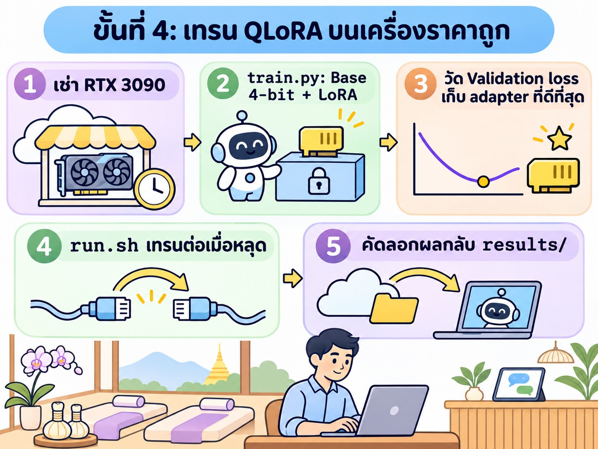
vapp-lab3 และเปิดพอร์ต 8000 ไว้ให้ AI servertrain.py โหลด Qwen3-4B-Instruct-2507 แบบ 4-bit แล้วเทรน LoRA rank 8 ทุกชั้น Linear 3 Epoch โดยคิด loss เฉพาะคำตอบของผู้ช่วยlab3_qlora/resultsพรอมต์ · ขั้นที่ 4 · เช่า RTX 3090 เขียนโค้ดเทรน QLoRA แล้ว TrainingCopy & Paste
ทำงานใน container `multi-account` โฟลเดอร์ /workspace/vastapp_lab ด้วยสกิล vastai
กุญแจ SSH อยู่ที่ /workspace/vastai_lab/Devtool_SSH/devtoolSSH
เช่าเครื่องราคาถูก แล้วสอนโมเดลเล็กด้วย Dataset ที่ครูทำไว้
1. เช่า RTX 3090 1 ใบ ราคารวมไม่เกิน $0.40 ต่อชั่วโมง ตั้งป้ายเครื่องว่า vapp-lab3
2. เลือกเครื่อง verified RAM 24 GB ขึ้นไป รองรับ CUDA 13 ขึ้นไป disk 60 GB ใช้ image PyTorch 2.8 ที่มี CUDA 12.8 และเปิดพอร์ต 8000 ไว้ให้ AI server
3. เขียนสคริปต์เทรนไว้ที่ lab3_qlora/code/train.py: เริ่มจากโมเดล Qwen/Qwen3-4B-Instruct-2507 โหลดแบบ 4-bit แล้วเทรนเฉพาะ LoRA adapter (rank 8 ใส่ทุกชั้น Linear ของ attention และ MLP)
4. เทรนด้วย Training Set ใน lab3_qlora/data 3 Epoch learning rate 0.0002 ทีละ 1 บท สะสม 8 บทต่อการปรับน้ำหนัก 1 ครั้ง seed 0 และคิด loss เฉพาะส่วนที่เป็นคำตอบของผู้ช่วย
5. วัด Validation loss ก่อนเทรนและทุก 20 step เก็บ adapter รอบที่ Validation loss ต่ำสุด บันทึกตัวเลข (loss ทุกช่วง เวลาเทรน VRAM สูงสุด ขนาด adapter) และกราฟ loss
6. นำไปรันบนเครื่องที่เช่า ให้เทรนต่อได้แม้การเชื่อมต่อหลุด และรายงานทุก 5 นาทีว่าถึง step ไหน loss เท่าไร
7. เทรนจบแล้วเก็บผลกลับมาไว้ที่ lab3_qlora/results ของโฟลเดอร์ปัจจุบัน (โฟลเดอร์ adapter ไฟล์ train_log.json และกราฟ loss_curve.png) แล้วอธิบายโค้ดสั้น ๆ 3–5 บรรทัด
8. ห้ามแสดงค่า key บนจอ และห้ามแตะเครื่องที่ป้ายไม่ได้ขึ้นต้นด้วย vapp-lab3
สรุปเป็นตารางภาษาไทย: GPU · ราคาต่อชั่วโมง · เวลาเทรน · Validation loss ก่อนและหลังเทรน · VRAM สูงสุด · ขนาด adapter แล้วบอกว่าเครื่องยังเปิดอยู่ตรวจผลของคุณ · ขั้นที่ 4 · เช่า RTX 3090 เขียนโค้ดเทรน QLoRA แล้ว TrainingChecklist
ผลจริงขั้นที่ 4: Validation loss ลดจาก 1.004 เป็น 0.307 ในเวลาเทรน 35.6 นาทีผลรอบจริง
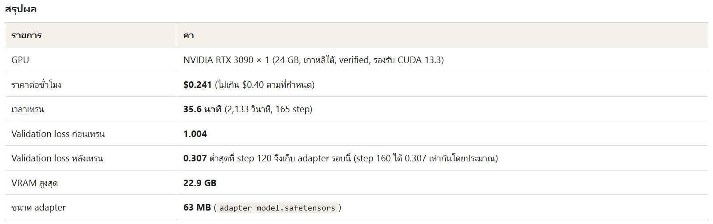
ส่วนหนึ่งของคำตอบจริง: ตารางสรุปผล · ใช้เวลา 41.8 นาที · เทรนจริง 35.6 นาที · ภาพเต็ม: image/lab3-step4.png
กราฟ loss ของรอบจริง: Adapter ที่เก็บไว้มาจาก step 120 ไม่ใช่ step สุดท้ายresults/loss_curve.png
ดูวงกลมดำบนเส้นแดง · Training loss ลงต่อถึงราว 0.12 ขณะที่ Validation loss หยุดที่ 0.31 แปลว่า เริ่ม Overfitting และเทรนเกิน 3 Epoch ไม่น่าได้อะไรเพิ่ม
อ่านผลขั้นที่ 4: ค่าที่ AI รายงานขึ้นกับวิธีวัดที่ AI เลือกเอง
lab3_qlora/results/adapter บนเครื่องของคุณ และไม่ได้เก็บในรีโปเพราะไฟล์ใหญ่เปิด AI server 2 โมเดล แล้ววัดผลบน Validation Set
เขียน serve.sh เปิด vLLM ที่มี 2 ชื่อโมเดลบน server เดียว และ eval_val.py วัดทั้งสองโมเดลด้วยคำถามเดียวกัน
เวลาจริง ใช้เวลา 11.2 นาที
ผลจริง คำตอบที่ถูกเพิ่มจาก 87.1% เป็น 94.1%
ขั้นที่ 5 server เดียวมี 2 ชื่อโมเดล จึงเทียบ Base กับ Fine-tuned ได้ตรง
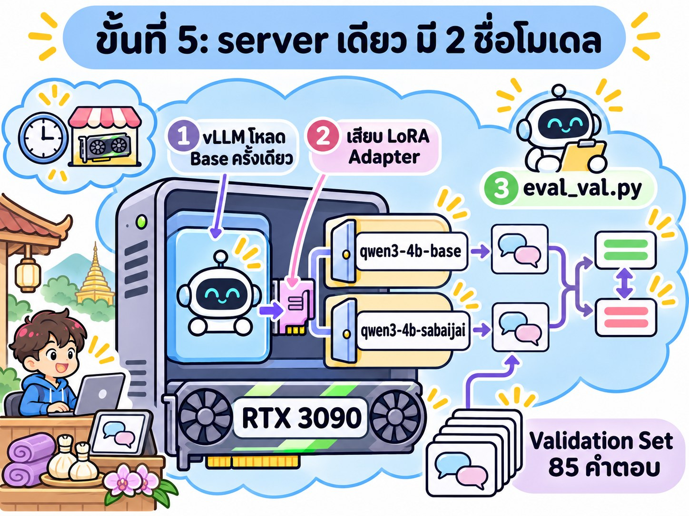
serve.sh ให้ vLLM โหลด Base Model ครั้งเดียว แล้วลงทะเบียน Adapter เป็นชื่อโมเดลอีกชื่อ: qwen3-4b-base และ qwen3-4b-sabaijaieval_val.py ให้ทั้ง 2 โมเดลตอบทุกข้อความใน Validation Set ด้วยประวัติแชทเดียวกัน (temperature 0)results/val_eval.jsonพรอมต์ · ขั้นที่ 5 · เปิด AI server 2 โมเดล แล้ววัดผลบน Validation SetCopy & Paste
ทำงานใน container `multi-account` โฟลเดอร์ /workspace/vastapp_lab ด้วยสกิล vastai
เครื่องที่ใช้คือเครื่องป้าย vapp-lab3 · กุญแจ SSH อยู่ที่ /workspace/vastai_lab/Devtool_SSH/devtoolSSH
เปิด AI server ที่มีทั้งโมเดลเดิมและโมเดลที่เพิ่งเทรน แล้ววัดว่าใครตอบคำถามที่ไม่เคยเห็นได้ดีกว่า
1. เขียนสคริปต์เปิด server ไว้ที่ lab3_qlora/code/serve.sh: ใช้ vLLM เปิดโมเดล Qwen/Qwen3-4B-Instruct-2507 พร้อม adapter ที่เทรนไว้ บน server เดียวที่พอร์ต 8000 รับคำขอแบบ OpenAI
2. server ต้องมี 2 ชื่อโมเดล คือ qwen3-4b-base (โมเดลเดิม) และ qwen3-4b-sabaijai (โมเดลเดิม + adapter) และต้องใช้ API key ที่สุ่มขึ้นใหม่ แล้วนำไปเปิดบนเครื่องที่เช่า
3. ลองถามทั้ง 2 โมเดลจากนอกเครื่อง แล้วเขียนค่าเชื่อมต่อ (ที่อยู่ key ชื่อโมเดลทั้ง 2) ไว้ที่ lab3_qlora/chatbot.env ของโฟลเดอร์ปัจจุบัน
4. เขียนสคริปต์วัดผลไว้ที่ lab3_qlora/code/eval_val.py: ให้ทั้ง 2 โมเดลตอบทุกข้อความใน Validation Set ด้วยประวัติแชทเดียวกัน (temperature 0) แล้วตรวจด้วยเงื่อนไขของคำตอบที่กำกับไว้ใน Dataset
5. ตัวเลขของแต่ละโมเดลที่ต้องมี: คำตอบที่ถูก (%) · แท็กจองถูกรูปแบบ (%) · ข้อมูลในแท็กจองถูกครบ (%) · ใส่แท็กจองทั้งที่ข้อมูลไม่ครบ (%) · ลงท้ายว่า "ครับ" (%) · มีคำไทยปนในคำตอบภาษาอังกฤษ (%)
6. วัดความเร็ว token ต่อวินาที และ VRAM ที่ server ใช้ด้วย เก็บผลทั้งหมดที่ lab3_qlora/results/val_eval.json แล้วอธิบายโค้ดสั้น ๆ 3–5 บรรทัด
7. ห้ามแสดงค่า key บนจอ และห้ามแตะเครื่องที่ป้ายไม่ได้ขึ้นต้นด้วย vapp-lab3
สรุปเป็นตารางภาษาไทย Base เทียบ Fine-tuned ตามตัวเลขในข้อ 5 และ 6 พร้อมตัวอย่างคำถาม 2 ข้อที่สองโมเดลตอบต่างกัน แล้วบอกว่าเครื่องยังเปิดอยู่ตรวจผลของคุณ · ขั้นที่ 5 · เปิด AI server 2 โมเดล แล้ววัดผลบน Validation SetChecklist
ผลจริงขั้นที่ 5: Fine-tuned ตอบถูก 80 จาก 85 ข้อ เทียบกับ 74 ข้อของ Baseผลรอบจริง
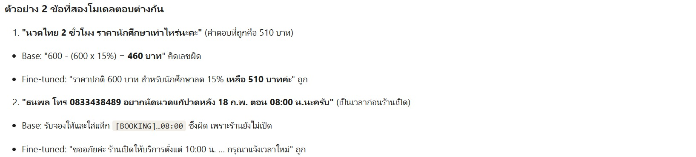
ส่วนหนึ่งของคำตอบจริง: 2 ข้อที่สองโมเดลตอบต่างกัน คือราคานักศึกษา (600 บาท ลด 15%) และการจองเวลา 08:00 ก่อนร้านเปิด · ภาพเต็ม: image/lab3-step5.png
Base เทียบ Fine-tuned ทีละตัววัด: แถวที่มี ↓ ยิ่งต่ำยิ่งดีตารางหลัก
| ตัววัด (Validation Set 48 บท · 85 คำตอบ · temperature 0) | Base | Fine-tuned |
|---|---|---|
| คำตอบที่ถูกตามเงื่อนไข (85 ข้อ) | 87.1% | 94.1% |
| แท็กจองถูกรูปแบบ (8 ข้อที่ข้อมูลครบ) | 100% | 100% |
| ข้อมูลในแท็กจองถูกครบ (8 ข้อ) | 100% | 100% |
| ใส่แท็กจองทั้งที่ข้อมูลไม่ครบ (77 ข้อ) ↓ | 6.5% | 1.3% |
| ลงท้ายว่า "ครับ" (83 ข้อภาษาไทย) ↓ | 3.6% | 0% |
| มีคำไทยปนในคำตอบภาษาอังกฤษ (2 ข้อ) ↓ | 100% | 0% |
| ความเร็ว (token ต่อวินาที ทีละคำขอ) | 55.0 | 50.6 |
อ่านผลขั้นที่ 5: Fine-tune ช่วยชัดบน Validation Set โดยเฉพาะเรื่องแท็กจอง
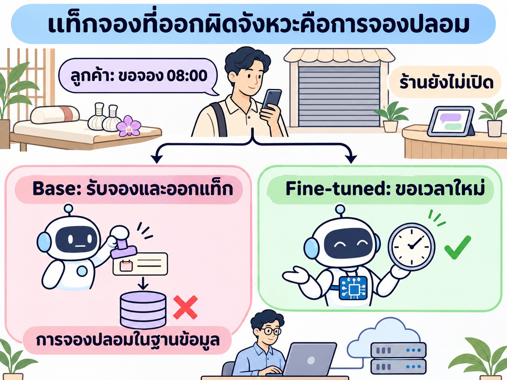
ต่อเว็บแชทบอทเข้ากับ 2 โมเดล
แก้เว็บแชทบอทเดิม เพิ่มตัวเลือกโมเดล หน้า /compare และ API สลับโมเดลเริ่มต้น แล้วรันด้วย Docker บนเครื่องของเรา
เวลาจริง ใช้เวลา 15.8 นาที
ผลจริง หน้าแชท /compare และ /bookings ใช้งานได้ และจองคิวสำเร็จ 1 รายการ
ขั้นที่ 6 เว็บแชทบอทเลือกโมเดลได้ และมีหน้าเทียบคำตอบ 2 โมเดล
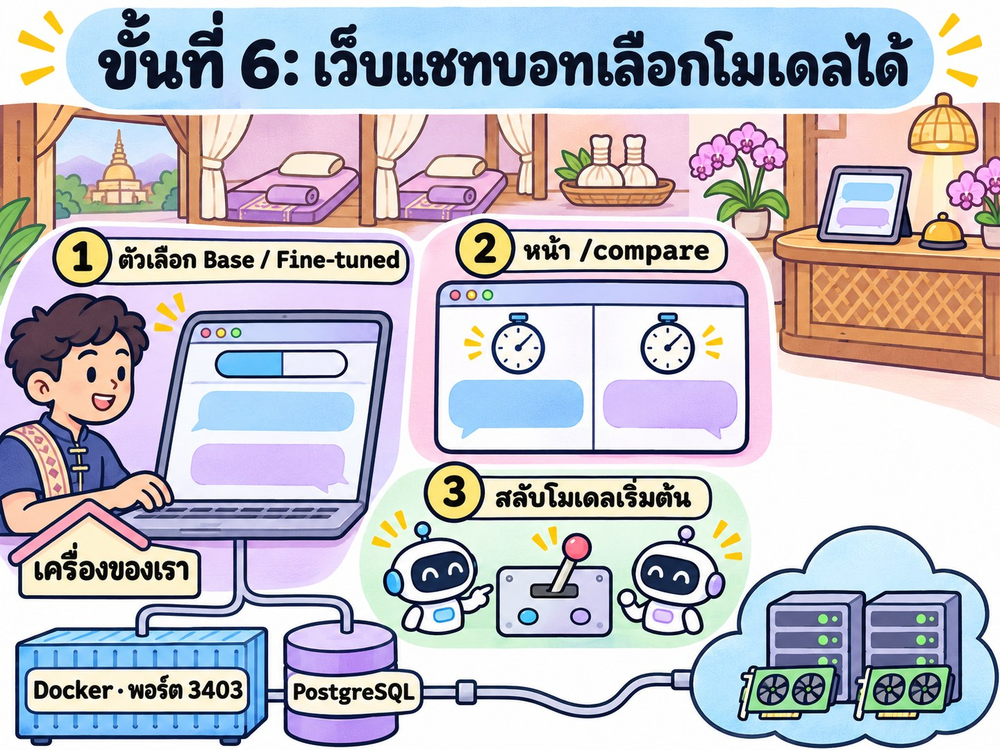
/compare รับคำถาม 1 ข้อ แล้วแสดงคำตอบ 2 โมเดลคู่กัน พร้อมเวลา token ต่อวินาที และผลตรวจแท็กจองvapp-lab3 พอร์ต 3403 โดยไม่เปลี่ยนส่วนที่ชุดทดสอบ 26 เคสใช้พรอมต์ · ขั้นที่ 6 · ต่อเว็บแชทบอทเข้ากับ 2 โมเดลCopy & Paste
ทำงานในโฟลเดอร์ปัจจุบัน เว็บรันด้วย Docker บนเครื่องนี้ ไม่ใช่ใน container multi-account
แก้เว็บแชทบอทเดิมใน lab3_qlora/code/web ให้เลือกคุยกับโมเดลเดิมหรือโมเดลที่เทรนแล้วได้
1. ให้เว็บเรียก AI server ตามค่าใน lab3_qlora/chatbot.env ตั้งชื่อ project ของ Docker Compose ว่า vapp-lab3 ใช้พอร์ต 3403 และเปิดทั้งชุด (เว็บ + PostgreSQL) ได้ด้วยคำสั่งเดียว
2. หน้าแชทเดิม: เพิ่มตัวเลือกโมเดล Base / Fine-tuned ถ้าผู้ใช้ไม่เลือกให้ใช้โมเดลเริ่มต้นของเว็บ
3. โมเดลเริ่มต้นของเว็บต้องสลับได้ขณะเว็บเปิดอยู่ (ชุดทดสอบจะใช้สลับโมเดล) และห้ามเปลี่ยนส่วนที่ชุดทดสอบ 26 เคสใช้อยู่
4. เพิ่มหน้า "เทียบคำตอบ" ที่ /compare: พิมพ์คำถาม 1 ข้อ แล้วเห็นคำตอบของทั้ง 2 โมเดลคู่กัน พร้อมเวลาที่ใช้ ความเร็ว token ต่อวินาที และบอกว่าแท็กจองถูกรูปแบบหรือไม่
5. หน้าเทียบคำตอบเก็บคำถามล่าสุดลง PostgreSQL หน้าตาเข้าชุดกับเว็บเดิม และเป็นภาษาไทย
6. เปิดเว็บ แล้วลองจริง: ถามในหน้าแชทด้วยโมเดลละ 1 คำถาม ลองหน้าเทียบคำตอบ 1 คำถาม และจองคิว 1 รายการให้ขึ้นในหน้ารายการจอง
7. อธิบายสิ่งที่แก้สั้น ๆ 3–5 บรรทัด ห้ามแสดงค่า key บนจอ
สรุปเป็นตารางภาษาไทย: หน้าที่มีในเว็บ · ผลการลองแต่ละอย่าง (คำถาม และคำตอบของแต่ละโมเดล) แล้วบอกว่าเว็บและเครื่องยังเปิดอยู่ตรวจผลของคุณ · ขั้นที่ 6 · ต่อเว็บแชทบอทเข้ากับ 2 โมเดลChecklist
/compare · /bookings · /api/model · จองคิวของ มานี ใจดี สำเร็จ · ใช้เวลา 15.8 นาทีหน้า /compare ของเว็บจริง: คำถามเดียวกัน Base ตอบ 460 บาท (ผิด) ส่วน Fine-tuned ตอบ 510 บาท (ถูก)ผลรอบจริง
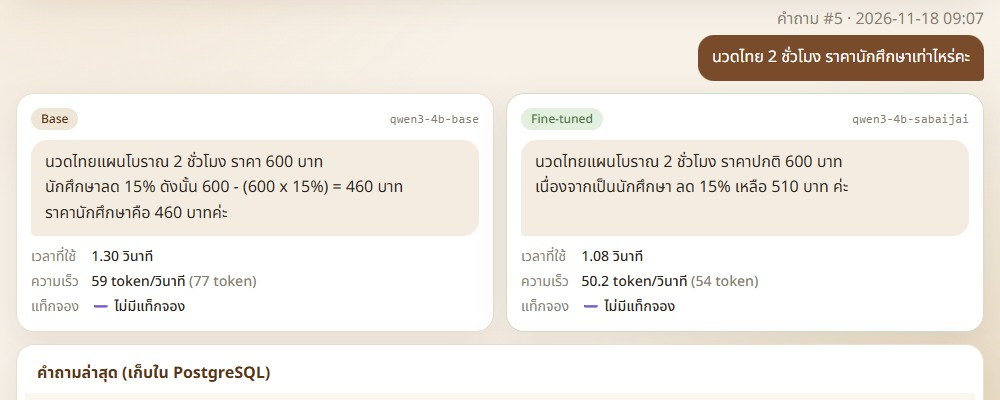
ส่วนหนึ่งของหน้าเว็บจริง · ราคานักศึกษาของนวดไทย 2 ชั่วโมงคือ 600 บาท ลด 15% · ทั้งคู่ไม่มีแท็กจอง · GIF · ภาพเต็ม: results/web/demo_compare_discount.png
จองคิวสำเร็จด้วย Fine-tuned: การ์ดจองปรากฏในแชท แล้วรายการขึ้นในหน้ารายการจองresults/web/
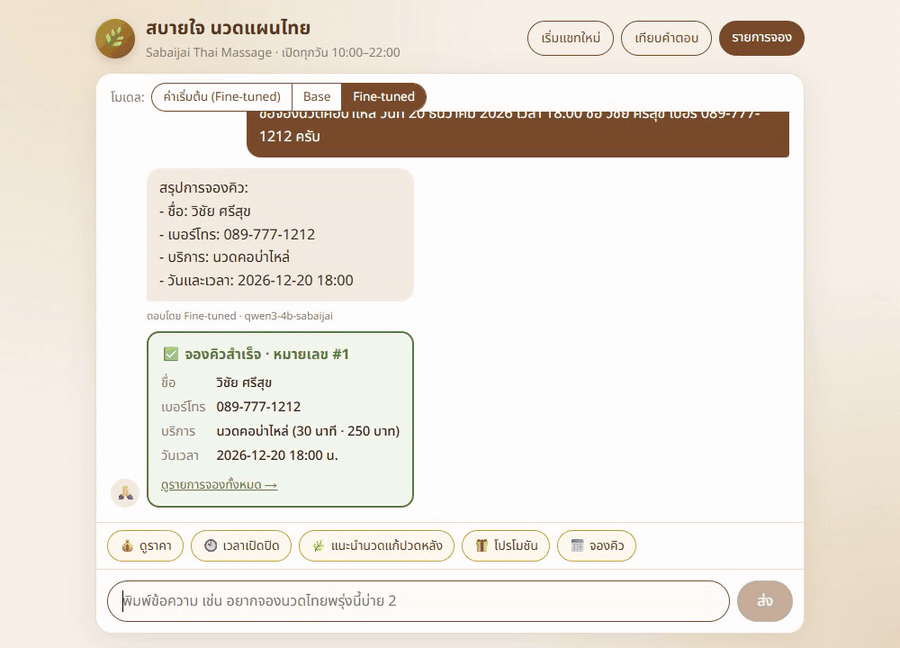
GIF อื่นของเว็บจริง: หน้าแชท Base · Fine-tuned · /compare คำถามภาษาอังกฤษ
อ่านผลขั้นที่ 6: โมเดลที่เทรนแล้วก็ยังตอบผิดได้
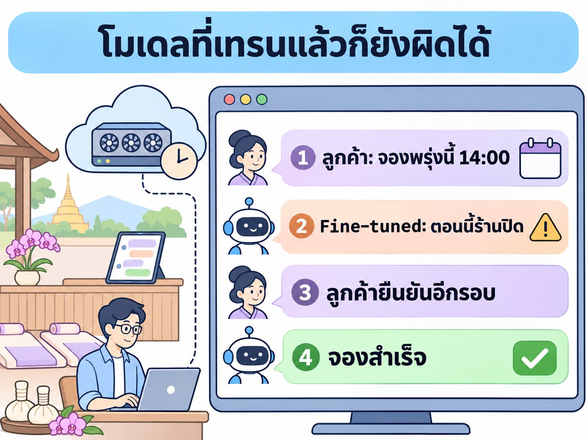
model ในคำขอเท่านั้น และหน้า /compare ถามทีละโมเดล การเทียบ A/B และตัวเลข token ต่อวินาทีจึงตรงกันรันชุดทดสอบ 26 เคสกับทั้ง 2 โมเดล
เขียน run-both.sh compare.mjs และ repeat.mjs รันชุดทดสอบเดิมกับ 2 โมเดล แล้วรันซ้ำอีก 5 รอบต่อโมเดล
เวลาจริง ใช้เวลา 13.3 นาที
ผลจริง Base 25/26 และ Fine-tuned 25/26 · Fine-tune ไม่ได้ทำให้ผ่านเพิ่ม
ขั้นที่ 7 รันชุดทดสอบ 26 เคสกับทั้ง 2 โมเดล แล้วรันซ้ำ 5 รอบ
run-both.sh สลับโมเดลเริ่มต้นของเว็บ ล้างตารางจองกับประวัติแชท แล้วรันชุดทดสอบ 26 เคสกับ Base และ Fine-tunedcompare.mjs ทำตารางรายเคส พร้อมคำตอบจริงของเคสที่ผลต่างกันrepeat.mjs รันโจทย์ 26 เคสเดิมซ้ำอีก 5 รอบต่อโมเดลผ่าน API เพื่อดูว่าผลแกว่งหรือไม่พรอมต์ · ขั้นที่ 7 · รันชุดทดสอบ 26 เคสกับทั้ง 2 โมเดลCopy & Paste
ทำงานใน container `multi-account` โฟลเดอร์ /workspace/vastapp_lab เว็บเปิดอยู่บนเครื่องนี้ที่พอร์ต 3403
ทดสอบโมเดลเล็กทั้ง 2 ตัวด้วยชุดทดสอบ 26 เคสเดิมของบทที่แล้ว (lab3_qlora/code/e2e) โดยไม่แก้เคสทดสอบ
1. เขียนสคริปต์ lab3_qlora/code/e2e/run-both.sh รันชุดทดสอบ 26 เคสกับโมเดล Base แล้วกับ Fine-tuned เก็บรายงานของแต่ละโมเดลแยกกัน
2. ก่อนแต่ละรอบ ให้สคริปต์สลับโมเดลเริ่มต้นของเว็บ และล้างตารางจองกับประวัติแชท
3. เขียนสคริปต์เทียบผล lab3_qlora/code/e2e/compare.mjs ทำตารางรายเคสว่าแต่ละโมเดลผ่านหรือไม่ พร้อมคำตอบจริงของเคสที่ผลต่างกัน
4. ให้รันโจทย์ 26 เคสเดิมซ้ำอีก 5 รอบต่อโมเดล ผ่าน API ของเว็บโดยไม่เปิดเบราว์เซอร์ เพื่อดูว่าผลแกว่งแค่ไหน
5. รันทั้งหมดใน container multi-account แล้วเก็บผลไว้ที่ lab3_qlora/results/e2e ของโฟลเดอร์ปัจจุบัน: ตารางเทียบ ไฟล์ compare.json และ repeat.json รายงานของแต่ละโมเดล และ GIF ของเคสที่ผลต่างกันไม่เกิน 4 เคส
6. อธิบายโค้ดสั้น ๆ 3–5 บรรทัด
สรุปเป็นตารางภาษาไทย 3 แถว: โมเดลใหญ่ 27B บน RTX 5090 (ผ่าน 26/26 จากบทที่แล้ว) · โมเดลเล็ก Base · โมเดลเล็ก Fine-tuned
แต่ละแถวบอก: ผ่านกี่เคสจาก 26 · ค่าเฉลี่ยจากรันซ้ำ 5 รอบ · เคสที่ไม่ผ่าน รายงานตามจริงแม้ Fine-tuned ไม่ดีขึ้น แล้วบอกว่าเครื่องและเว็บยังเปิดอยู่ตรวจผลของคุณ · ขั้นที่ 7 · รันชุดทดสอบ 26 เคสกับทั้ง 2 โมเดลChecklist
ผลจริงขั้นที่ 7: ผ่าน 25/26 เท่ากัน แต่ตกคนละเคส และตกเคสเดิมทุกรอบresults/val_compare.png
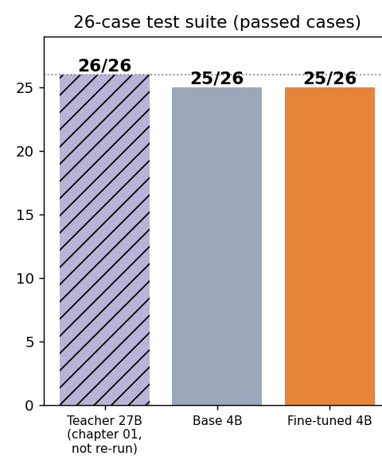
เคส 19: Fine-tuned ตีความ "อันที่ถูกกว่า" ผิด ซึ่งเป็นความผิดจริงresults/e2e/diff-gifs/
✅ ตอบนวดไทย 60 นาที 350 บาท แล้วตอบนวดไทย 2 ชั่วโมง 600 บาท
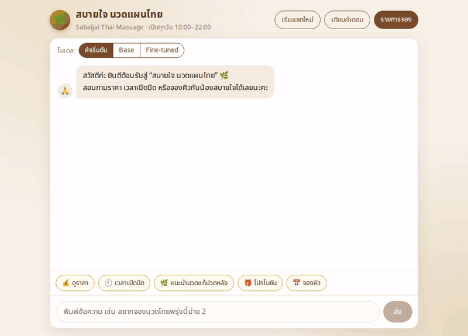
❌ ไปตอบนวดเท้า 300 บาท (ถูกที่สุดในร้าน ไม่ใช่ถูกกว่าใน 2 อย่างที่คุยอยู่) แล้วตอบว่าไม่มีนวดเท้าแบบ 2 ชั่วโมง
เคส 21: Base ตอบเนื้อหาไม่ผิด แต่ตกเพราะไม่มีเลข "21" ตามเกณฑ์results/e2e/diff-gifs/
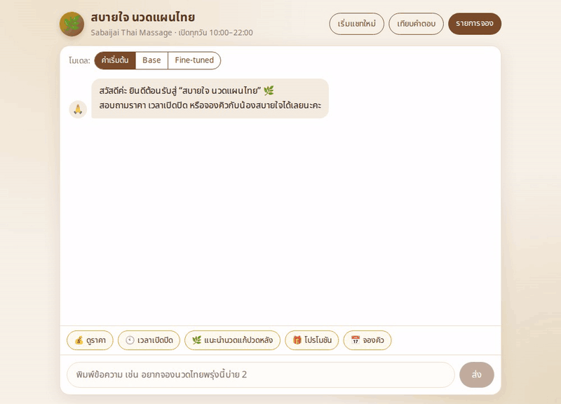
❌ "ทันค่ะ ร้านเปิดถึง 22:00 น. สามารถนัด 3 ทุ่มได้ค่ะ" · ไม่มีเลข 21 ตามเกณฑ์
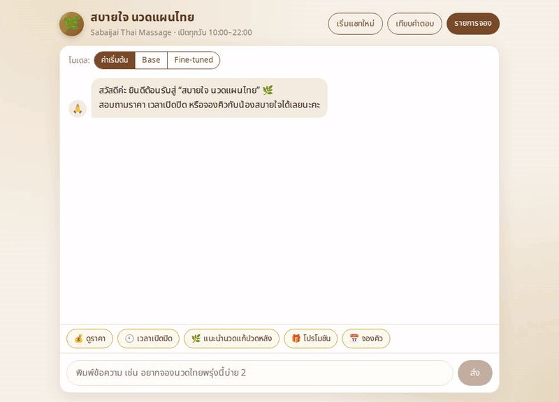
✅ "ได้ค่ะ … รับลูกค้ารอบสุดท้ายเวลา 21:00 น."
อ่านผลขั้นที่ 7: สองโมเดลใกล้กันเกินกว่าที่ชุดทดสอบ 26 เคสจะตัดสินได้
ข้อสรุปที่ตรงกับหลักฐาน: Fine-tune ทำให้ตอบเหมือนครูมากขึ้น แต่ไม่ได้เก่งขึ้นทุกเรื่อง
ลบเครื่อง ปิดเว็บ สรุปค่าใช้จ่าย
จดข้อมูลเครื่อง ลบเครื่อง ปิดเว็บ และตรวจว่าไฟล์ของทุกขั้นกลับมาอยู่บนเครื่องของเราครบ · ห้ามข้ามขั้นนี้
เวลาจริง ใช้เวลา 4.2 นาที
ผลจริง ไม่มีเครื่องค้าง และค่าเช่ารวมขั้นที่ 1–8 คือ $0.69
ขั้นที่ 8 ลบเครื่อง ปิดเว็บ และเก็บไฟล์ให้ครบ
vapp-lab3* ก่อนลบ ได้แก่ GPU ราคาต่อชั่วโมง เวลาที่เปิด และปริมาณดาวน์โหลดvapp-lab3 แล้วตรวจว่าไม่เหลือ โดยไม่แตะเครื่องป้ายอื่น และปิดเว็บบนเครื่องของเราพรอมต์ · ขั้นที่ 8 · ลบเครื่อง ปิดเว็บ สรุปค่าใช้จ่ายCopy & Paste
ทำงานใน container `multi-account` โฟลเดอร์ /workspace/vastapp_lab ด้วยสกิล vastai
ปิดงานของ LAB: ลบเครื่องที่เช่า ปิดเว็บ และสรุปว่าใช้เงินไปเท่าไร
1. จดข้อมูลของเครื่องที่ป้ายขึ้นต้นด้วย vapp-lab3 ก่อนลบ: GPU ราคาต่อชั่วโมง เวลาที่เปิดมา ปริมาณดาวน์โหลด
2. ลบเครื่องที่ป้ายขึ้นต้นด้วย vapp-lab3 ทุกเครื่อง แล้วตรวจว่าไม่เหลือ ห้ามแตะเครื่องป้ายอื่น
3. ปิดเว็บใน lab3_qlora/code/web บนเครื่องนี้
4. ตรวจว่าโค้ดใน lab3_qlora/code และผลใน lab3_qlora/results ของโฟลเดอร์ปัจจุบันบนเครื่องนี้มีครบทุกขั้น ถ้าไฟล์ไหนยังอยู่แค่ใน container ให้คัดลอกกลับมา
สรุปเป็นตารางภาษาไทย: เครื่องที่ลบ · เวลาที่เปิด · ค่าเช่าโดยประมาณ (ราคาต่อชั่วโมง × ชั่วโมง + ค่าดาวน์โหลด) · ผลตรวจว่าไม่มีเครื่องค้าง
และเทียบราคาต่อชั่วโมงของ RTX 3090 เครื่องนี้กับ RTX 5090 ที่โมเดลใหญ่ต้องใช้ตรวจผลของคุณ · ขั้นที่ 8 · ลบเครื่อง ปิดเว็บ สรุปค่าใช้จ่ายChecklist
ผลจริงขั้นที่ 8: เครื่องแพงเปิดสั้นที่สุด และค่าเช่ารวมคือ $0.69ผลรอบจริง
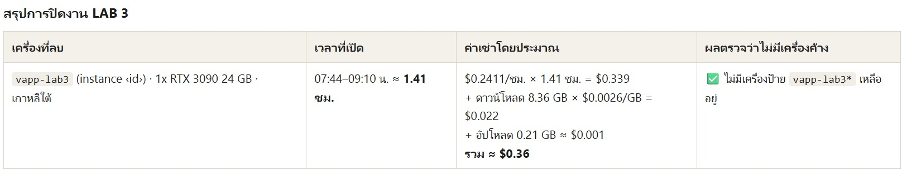
vapp-lab3-teacher · RTX 5090 (Texas)vapp-lab3 · RTX 3090 (เกาหลีใต้)ส่วนหนึ่งของคำตอบจริง: ค่าเช่าของเครื่อง vapp-lab3 (เครื่องครูถูกลบไปแล้วในขั้นที่ 3) · ภาพเต็ม: image/lab3-step8.png
อ่านผลขั้นที่ 8: เทรนจริง 35.6 นาที แต่เครื่องนักเรียนเปิด 84 นาทีREADME · ขั้นที่ 8
เก็บงานทั้ง LAB ไว้ทำซ้ำในคำสั่งเดียว
ถ้าต้องทำซ้ำ เช่น เปลี่ยนจำนวน Epoch ไม่ควรต้องวาง 8 พรอมต์ใหม่ · สกิลเก็บวิธีทำงานที่สำเร็จแล้วพร้อมโค้ดที่ใช้ได้จริง
จากพรอมต์ทีละขั้นสู่สกิลเวอร์ชัน 0 ที่ทำซ้ำได้ในคำสั่งเดียว

ภาพแสดงตัวอย่าง 7 พรอมต์ · LAB นี้มีงานหลัก 8 พรอมต์
สรุป LAB เป็นสกิลเวอร์ชัน 0
AI อ่านพรอมต์ โค้ด และผลของ LAB แล้วเขียน SKILL.md พร้อมคัดลอกโค้ดที่ใช้ได้แล้วเข้าไปในสกิล
เวลาจริง ใช้เวลา 3.5 นาที · ไม่ต้องเช่าเครื่อง · สกิลที่ได้: skill_v0/SKILL.md (94 บรรทัด) และโค้ดใน skill_v0/scripts/
ผลจริง สกิล qlora-chatbot-tune · skill_v0/SKILL.md
พรอมต์ · ขั้นที่ 9 · สรุป LAB เป็นสกิลเวอร์ชัน 0Copy & Paste
ทำงานในโฟลเดอร์ปัจจุบัน
สร้างสกิลเวอร์ชัน 0 ชื่อ qlora-chatbot-tune จากงานทั้ง LAB นี้ เพื่อให้ครั้งหน้าสั่งทำซ้ำได้ในคำสั่งเดียว
1. ดูว่า LAB ทำอะไรไปบ้าง จากพรอมต์ทุกขั้นใน lab3_qlora/PROMPTS.md โค้ดใน lab3_qlora/code และผลใน lab3_qlora/results
2. เขียนสกิลไว้ที่ lab3_qlora/skill_v0/SKILL.md ให้มี name และ description (บอกว่าใช้เมื่อไร) ขั้นตอน เกณฑ์ตรวจผ่าน และกติกาเรื่องเงิน (จบงานต้องลบเครื่องเสมอ)
3. ในสกิลบอกค่าที่ผู้ใช้ปรับได้พร้อมค่าเริ่มต้น: GPU เพดานราคา ป้ายเครื่อง โมเดลตั้งต้น จำนวน Epoch จะสร้าง Dataset ใหม่หรือใช้ของเดิม และจะเปิดเว็บหรือไม่
4. เก็บโค้ดที่ใช้ได้แล้วจาก lab3_qlora/code เข้าไปไว้ที่ lab3_qlora/skill_v0/scripts เพื่อให้รอบหน้าไม่ต้องเขียนโค้ดใหม่ สกิลนี้เรียกใช้สกิล vastai ต่อ ไม่เขียนทับ
5. ติดตั้งสกิลให้ Claude Code ใช้ได้ที่ .claude/skills/qlora-chatbot-tune ของโฟลเดอร์ปัจจุบัน
สรุปเป็นภาษาไทย: สกิลทำอะไรได้ · ปรับค่าอะไรได้บ้าง · ไฟล์ที่อยู่ในสกิล · ตัวอย่างประโยคเรียกใช้ 2 แบบตรวจผลของคุณ · ขั้นที่ 9 · สรุป LAB เป็นสกิลเวอร์ชัน 0Checklist
skill_v0/scripts/ · ใช้เวลา 3.5 นาที · ไม่ต้องเช่าเครื่องผลจริงขั้นที่ 9: สกิล qlora-chatbot-tune มีลำดับงาน 5 ช่วง พร้อมค่าที่ปรับได้ผลรอบจริง
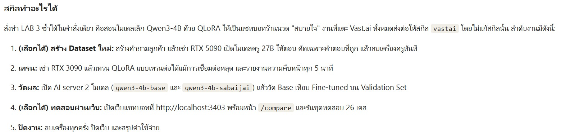
lab3_qlora/codeส่วนหนึ่งของคำตอบจริง: สกิลทำอะไรได้ · สกิลที่ได้: skill_v0/SKILL.md · ภาพเต็ม: image/lab3-step9.png
ลองใช้สกิลเวอร์ชัน 0
AI ตัวใหม่ได้คำสั่ง 3 บรรทัด แล้วเช่าเครื่อง เทรน 1 Epoch เปิด server วัดผล และลบเครื่องเอง โดยใช้โค้ดในสกิล
เวลาจริง ใช้เวลา 75.7 นาที · เครื่องเปิด 73.6 นาที · ผลอยู่ที่ results/skill_test/
ผลจริง ผ่านในรอบแรก แต่ 1 Epoch ได้คำตอบที่ถูกเพียง 84.7% → 85.9%
พรอมต์ · ขั้นที่ 10 · ลองใช้สกิลเวอร์ชัน 0Copy & Paste
ใช้สกิล qlora-chatbot-tune เทรนโมเดลเล็กให้แชทบอทร้านนวด 1 Epoch ด้วย Dataset เดิมที่มีอยู่แล้ว ไม่ต้องเปิดโมเดลครู ไม่ต้องเปิดเว็บ
ตั้งป้ายเครื่องว่า vapp-lab3-skill ราคาไม่เกิน $0.40 ต่อชั่วโมง วัดผล Base เทียบ Fine-tuned บน Validation Set เก็บผลไว้ที่ lab3_qlora/results/skill_test แล้วลบเครื่อง
สรุปเป็นตารางภาษาไทย: ผลก่อนและหลัง · เวลาที่ใช้ · ค่าใช้จ่าย แล้วยืนยันว่าเครื่องถูกลบแล้วตรวจผลของคุณ · ขั้นที่ 10 · ลองใช้สกิลเวอร์ชัน 0Checklist
ผลจริงขั้นที่ 10: คำสั่งเดียวแทน 3 พรอมต์ได้ แต่ 1 Epoch ยังไม่พอผลรอบจริง
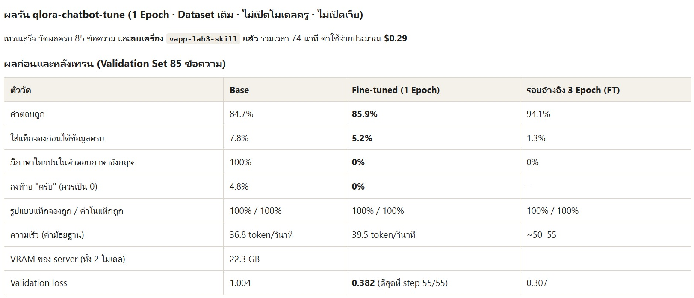
ส่วนหนึ่งของคำตอบจริง: ผลก่อนและหลังเทรน · ผลอยู่ที่ results/skill_test/ · ภาพเต็ม: image/lab3-step10.png
สั่งทีละขั้นเทียบกับสกิล v0: คำสั่งน้อยลง แต่ไม่ได้เร็วกว่าตารางหลัก
| สั่งทีละขั้น (ขั้นที่ 4, 5 และ 8) | สกิล v0 คำสั่งเดียว | |
|---|---|---|
| จำนวนพรอมต์ | 3 | 1 |
| ต้องเขียนโค้ดใหม่ | ใช่ | ไม่ (ใช้ scripts/) |
| จำนวน Epoch | 3 | 1 |
| Validation loss | 1.004 → 0.307 | 1.004 → 0.382 |
| คำตอบที่ถูก Base → Fine-tuned | 87.1% → 94.1% | 84.7% → 85.9% |
| ใส่แท็กจองทั้งที่ข้อมูลไม่ครบ | 6.5% → 1.3% | 7.8% → 5.2% |
| เวลารวม | 57 นาที | 76 นาที |
| ค่าเช่า | $0.36 | $0.29 |
อ่านผลขั้นที่ 10: เทียบ Base กับ Fine-tuned ในรอบเดียวกันเสมอ
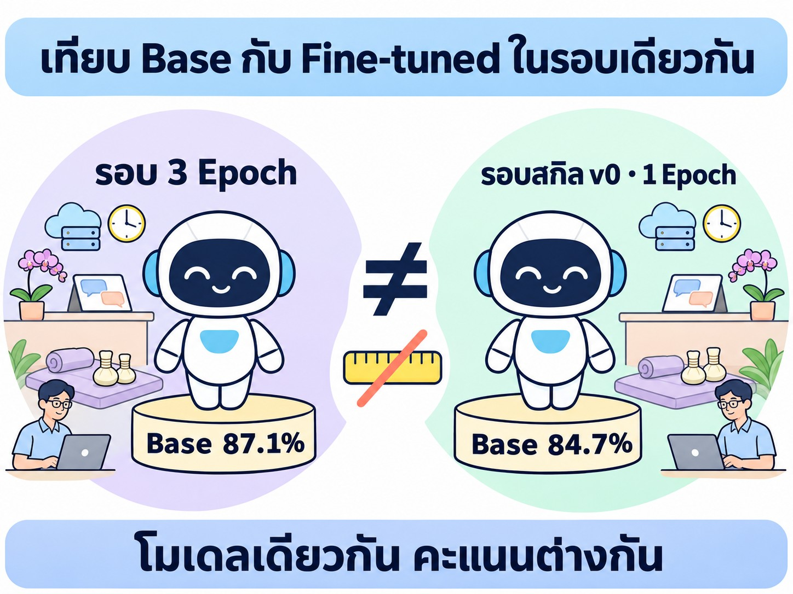
สกิล v0 ยังไม่สมบูรณ์: 5 จุดที่ควรแก้ในเวอร์ชัน 1
v1: ระบุ
transformers<5 ตั้งแต่ขั้นติดตั้งv1: ตัดโหมด offline ออก หรือระบุวิธีดาวน์โหลดที่ใช้ได้
v1: เพิ่มเกณฑ์ความเร็วอัปโหลดขั้นต่ำ และดึงเฉพาะไฟล์ที่จำเป็น
v1: แก้ค่าอ้างอิงตามผลจริงของรอบ 1 Epoch (0.382) และบอกว่าเป็นค่าจากกี่รอบ
qwen3-4b-sabaijai · path · กุญแจ SSH)v1: แยกค่าเหล่านี้เป็นค่าที่ปรับได้
โมเดลเล็กถูกกว่าราว 3.1 เท่า และผ่าน 25/26 ตั้งแต่ยังไม่เทรน
Fine-tune ช่วยบน Validation Set แต่ไม่ได้ทำให้ผ่านชุดทดสอบเพิ่ม
ผลรวม: ชุดทดสอบแยกสองโมเดลไม่ออก แต่ Validation Set เห็นความต่าง 7 จุดresults/val_compare.png
ดูแผงขวา · คำตอบที่ถูก 87.1% → 94.1% · ใส่แท็กจองเร็วเกิน 6.5% → 1.3% · ลงท้าย "ครับ" 3.6% → 0%
ตารางสรุป 3 แขน: ชุดทดสอบ 26 เคสบนเว็บจริงตารางหลัก
| แขน | โมเดล | GPU (ราคาที่เช่าจริง) | ผ่าน | รันซ้ำ 5 รอบผ่าน API | เคสที่ไม่ผ่าน |
|---|---|---|---|---|---|
| A | Qwen3.8 27B (ครู) | RTX 5090 ($0.745/ชม.) | 26/26 · อ้างจากบทที่แล้ว ไม่ได้รันซ้ำ | – | – |
| B | Qwen3-4B Base | RTX 3090 ($0.241/ชม.) | 25/26 | 25, 25, 25, 25, 25 | 21 (late-time) |
| C | Qwen3-4B + LoRA | RTX 3090 ($0.241/ชม.) | 25/26 | 25, 25, 25, 25, 25 | 19 (followup-2h) |
สิ่งที่ได้เรียนจาก LAB นี้มี 6 ข้อ และทุกข้อมาจากผลของรอบจริง
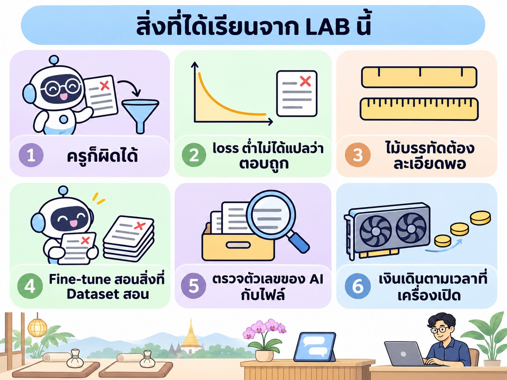
ครูตอบผิดจนถูกทิ้ง 85 จาก 570 บท (15%) · ชุดทดสอบ 1 เคสมีน้ำหนัก 3.8% · AI รายงาน 993 ข้อความ แต่ไฟล์มี 998 ข้อความ · เก็บ Adapter ที่ Validation loss ต่ำสุด และลบเครื่องทุกครั้งที่จบงาน
ข้อจำกัด: สิ่งที่ LAB นี้ยังสรุปไม่ได้ หรือยังไม่ผ่าน
Fine-tune ไม่ได้ทำให้ผ่านเพิ่ม
ชุดทดสอบ 26 เคส: Base 25/26 และ Fine-tuned 25/26 โดยได้เคส 21 แต่เสียเคส 19
ยังแทนโมเดลใหญ่ไม่ได้เต็มตัว
ยังไม่เท่า 26/26 ของโมเดลใหญ่ที่อ้างจากบทที่แล้ว และ LAB นี้ไม่ได้รันโมเดลใหญ่ซ้ำ
Validation Set มาจากแม่แบบเดียวกับ Training Set
บอกได้ว่าตอบเหมือนครูมากขึ้นในคำถามแบบที่ครูสอน ไม่ใช่คำถามทุกแบบ
ตัวหารเล็ก
แถวแท็กจองมี 8 ข้อ ภาษาอังกฤษ 2 ข้อ และ Validation Set 48 บท บางชนิดเหลือ 1–2 บท
สกิล v0 ยังไม่สมบูรณ์
ไม่ตรึงเวอร์ชันไลบรารี เลือกเครื่องจากราคาอย่างเดียว และ 1 Epoch ยังไม่พอ
POST /api/reset ไม่มีการป้องกัน
AI เพิ่มไว้ล้างตารางก่อนแต่ละรอบ เว็บที่ใช้งานจริงไม่ควรมีช่องทางนี้
รายละเอียดเต็มของทุกขั้นอยู่ใน README
อ่านต่อ: README.md · พรอมต์ทั้ง 10 ขั้น: PROMPTS.md · กลับ หน้ารวมของบท